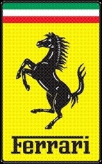

홈 > 브랜드 매거진 > 페라리
페라리
페라리(Ferrari)는 이탈리아 마라넬로에 본사를 둔 럭셔리 스포츠카 제조사이다.
산업 분야 모빌리티 · 공개 등급 편집 검수 · 브랜드 평가 4.6 ★


한눈에 보는 브랜드
페라리(Ferrari)는 엔초 페라리가 알파로메오를 떠난 뒤 1939년 설립해 1947년부터 로드카를 생산했다. '도약하는 말' 엠블럼과 레드 컬러로 상징되며 F1 스쿠데리아 페라리를 운영하는 럭셔리 스포츠카 브랜드다.
브랜드 관점
페라리 항목은 단순한 이름 목록이 아니라 모빌리티 시장 안에서 어떤 역할을 하는지 읽기 위한 기준점입니다. 제품·서비스 범위, 유통 방식, 시각 아이덴티티, 시장 포지션을 함께 비교하면 같은 산업의 다른 브랜드와 차이가 선명해집니다.
시작과 성장
엔초 페라리가 1939년 설립한 이탈리아의 고성능 스포츠카 브랜드로, 1947년부터 로드카를 생산했다.
브랜드 아이덴티티
모터스포츠 유산에서 비롯된 최고 성능과 이탈리아 장인정신의 상징이다.
제품과 서비스
대표 제품과 서비스 정보는 편집 검수 후 공개됩니다.
현재 상태
산업: 모빌리티
타임라인
BI/CI 변천사
 대표 로고대표 브랜드 마크
대표 로고대표 브랜드 마크함께 읽을 브랜드
두카티는 이탈리아의 모빌리티 브랜드로, 기술 신뢰, 이동 경험, 서비스 네트워크, 디자인 언어가 결합되는 영역입니다.
사브는 스웨덴의 모빌리티 브랜드로, 기술 신뢰, 이동 경험, 서비스 네트워크, 디자인 언어가 결합되는 영역입니다.
피자헛는 모빌리티 브랜드로, 기술 신뢰, 이동 경험, 서비스 네트워크, 디자인 언어가 결합되는 영역입니다.
 모빌리티 · 자료 기반Euromaster
모빌리티 · 자료 기반EuromasterEuromaster는 프랑스의 모빌리티 브랜드로, 기술 신뢰, 이동 경험, 서비스 네트워크, 디자인 언어가 결합되는 영역입니다.
 모빌리티 · 자료 기반Mothercare
모빌리티 · 자료 기반MothercareMothercare는 영국의 모빌리티 브랜드로, 기술 신뢰, 이동 경험, 서비스 네트워크, 디자인 언어가 결합되는 영역입니다.
모빌리티 · 자료 기반MPL 커뮤니케이션스MPL 커뮤니케이션스는 영국의 모빌리티 브랜드로, 기술 신뢰, 이동 경험, 서비스 네트워크, 디자인 언어가 결합되는 영역입니다.
 모빌리티 · 자료 기반Repco
모빌리티 · 자료 기반RepcoRepco는 오스트레일리아의 모빌리티 브랜드로, 기술 신뢰, 이동 경험, 서비스 네트워크, 디자인 언어가 결합되는 영역입니다.
모빌리티 · 자료 기반RyderRyder는 미국의 모빌리티 브랜드로, 기술 신뢰, 이동 경험, 서비스 네트워크, 디자인 언어가 결합되는 영역입니다.